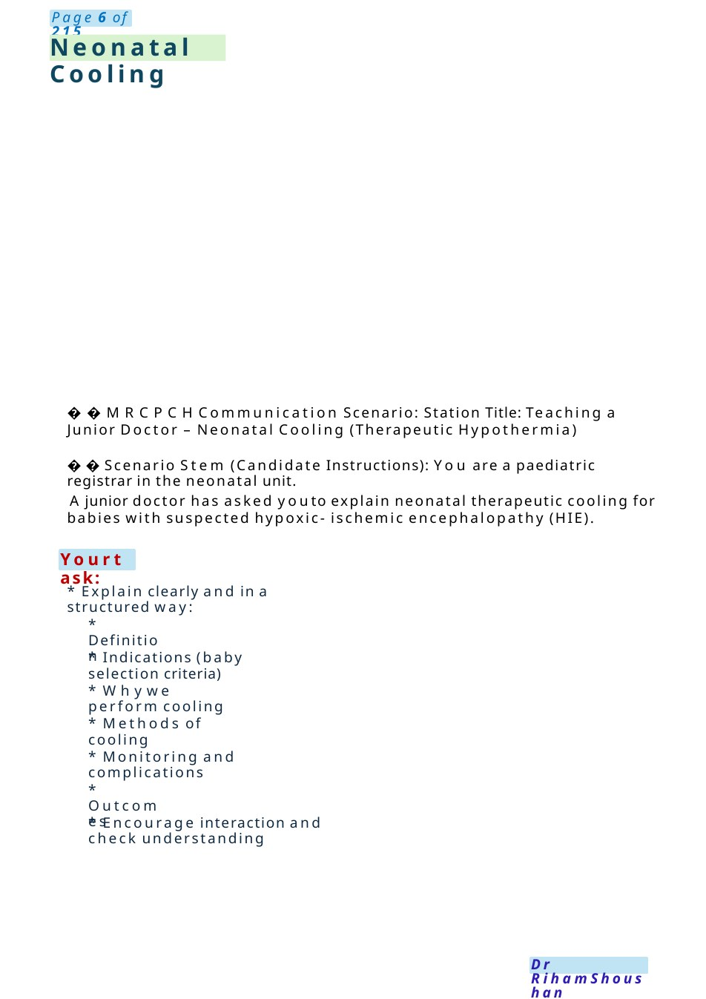
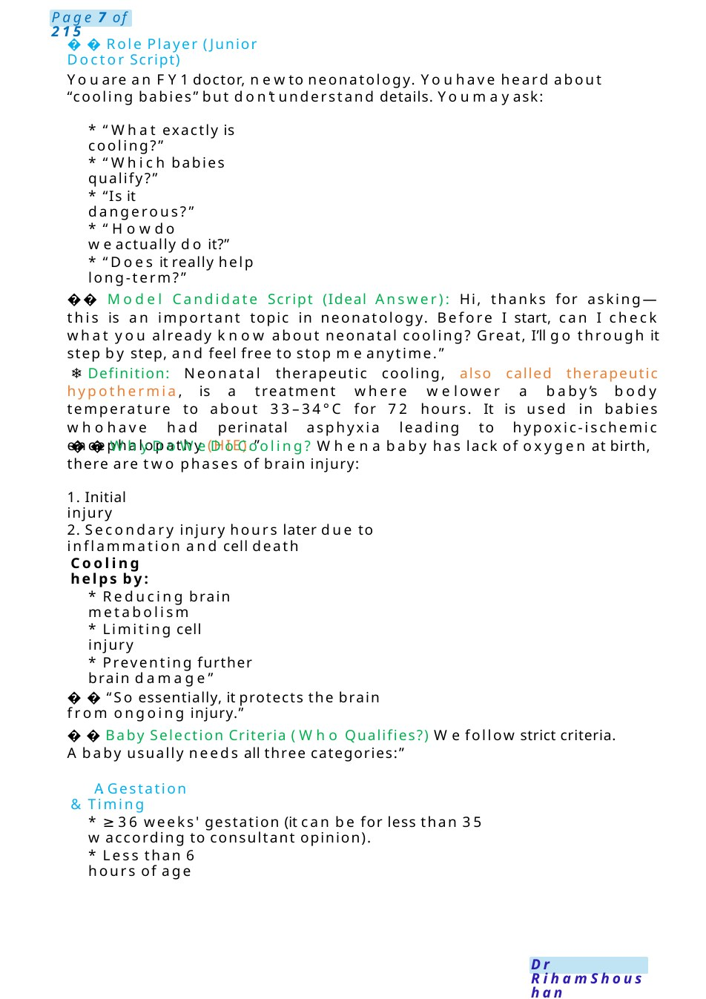
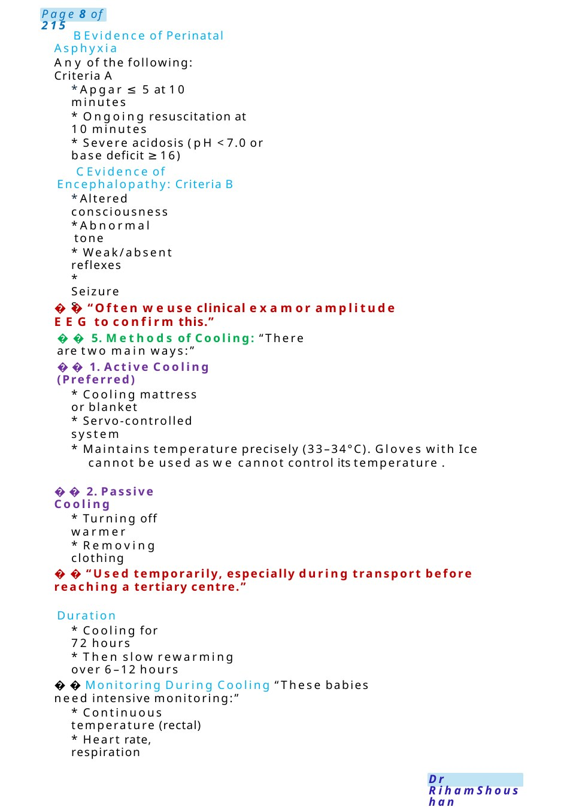

Neonatal Cooling
MRCPCHCommunication Scenario: Station Title: Teaching a Junior Doctor – Neonatal Cooling (Therapeutic Hypothermia) Scenario Stem (Candidate Instructions): You are a paediatric registrar in the neonatal unit.
Scenario Summary
MRCPCHCommunication Scenario: Station Title: Teaching a Junior Doctor – Neonatal Cooling (Therapeutic Hypothermia) Scenario Stem (Candidate Instructions): You are a paediatric registrar in the neonatal unit.
Full Original Scenario

Neonatal Cooling
Yourtask:
MRCPCHCommunication Scenario: Station Title: Teaching a Junior Doctor – Neonatal Cooling (Therapeutic Hypothermia)
Scenario Stem (Candidate Instructions): You are a paediatric registrar in the neonatal unit.
Ajunior doctor has asked youto explain neonatal therapeutic cooling for babies with suspected hypoxic- ischemic encephalopathy (HIE).
- Explain clearly and in a structured way:
- Definition
- Indications (baby selection criteria)
- Whywe perform cooling
- Methods of cooling
- Monitoring and complications
- Outcomes
- Encourage interaction and check understanding

Role Player (Junior Doctor Script)
Youare an FY1doctor, newto neonatology. Youhave heard about “cooling babies” but don’t understand details. Youmayask:
- “What exactly is cooling?”
- “Which babies qualify?”
- “Is it dangerous?”
- “Howdo weactually do it?”
- “Does it really help long-term?”
- Model Candidate Script (Ideal Answer): Hi, thanks for asking—this is an important topic in neonatology. Before I start, can I check what you already know about neonatal cooling? Great, I’ll go through it step by step, and feel free to stop meanytime.”
❄️Definition: Neonatal therapeutic cooling, also called therapeutic hypothermia, is a treatment where welower a baby’s body temperature to about 33–34°C for 72 hours. It is used in babies whohave had perinatal asphyxia leading to hypoxic-ischemic encephalopathy (HIE).”
Why Do We Do Cooling? Whena baby has lack of oxygen at birth, there are two phases of brain injury:
1. Initial injury
2. Secondary injury hours later due to inflammation and cell death
Cooling helps by:
- Reducing brain metabolism
- Limiting cell injury
- Preventing further brain damage”
“So essentially, it protects the brain from ongoing injury.”
Baby Selection Criteria (Who Qualifies?) Wefollow strict criteria. Ababy usually needs all three categories:”
- A. Gestation &Timing
- ≥36 weeks' gestation (it can be for less than 35 waccording to consultant opinion).
- Less than 6 hours of age

- B. Evidence of Perinatal Asphyxia
Any of the following: Criteria A
- Apgar ≤ 5 at 10 minutes
- Ongoing resuscitation at 10 minutes
- Severe acidosis (pH <7.0 or base deficit ≥16)
- C. Evidence of Encephalopathy: Criteria B
- Altered consciousness
- Abnormal tone
- Weak/absent reflexes
- Seizures
“Often weuse clinical examor amplitude EEG to confirm this.”
5. Methods of Cooling: “There are two main ways:”
1. Active Cooling (Preferred)
- Cooling mattress or blanket
- Servo-controlled system
- Maintains temperature precisely (33–34°C). Gloves with Ice cannot be used as we cannot control its temperature .
2. Passive Cooling
- Turning off warmer
- Removing clothing
“Used temporarily, especially during transport before reaching a tertiary centre.”
⏱️Duration
- Cooling for 72 hours
- Then slow rewarming over 6–12 hours
Monitoring During Cooling “These babies need intensive monitoring:”
- Continuous temperature (rectal)
- Heart rate, respiration

Neonatal Abstinence Syndrome
- Blood gases
- Glucose
- Electrolytes (especially calcium)
- Coagulation profile
- EEG/ brain monitoring
- ️Complications: “Cooling is generally safe but can cause:”
- Bradycardia
- Coagulopathy
- Thrombocytopenia
- Electrolyte imbalance
- Increased infection risk
“That’s whyclose monitoring is essential.”
Outcomes: “The key benefit is:”
- Reduces death and neurodevelopmental disability
- Improves long-term neurological outcomes
“But it’s not a cure—somebabies maystill have complications.”
Residual Risk: Despite improvements, some infants still face risks of cerebral palsy, cognitive delays, and epilepsy.
Monitoring and Follow-up: Long-term follow-up with neurologists and developmental specialists is crucial as motor function issues mayevolve
Thankyou for refreshing myknowledge today, whatabout to join meto the library to collect some books, journals, or papers about this topic searching for any newupdates.
Def: medication, tobacco and alcohol) taken in pregnancy will pass through the placenta and will be absorbed by your baby. If, during the pregnancy, the mother used any prescribed medication or illicit drugs that can cause physical dependency then the baby may become dependent on this medication too. Following delivery, when the umbilical cord has been cut, the supply of drugs to the baby suddenly stops and the baby mayshow signs of physical withdrawal.
signs and symptoms: variable in severity from mild to severe, Acontinuous high-pitched cry • Fast breathing (tachypnoea) • Irritability and restlessness and scratching of their faces • Shaking (tremor)